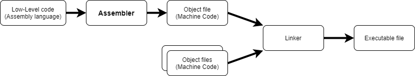

Assembler
An
Assembler is a program that translates
Assembly language to
machine
code.
Exist different Assemblers and each of them can be used with different system’s ISA:
•
Microsoft Macro Assembler (MASM):
x86 assembler that uses the Intel syntax for MS-DOS and Microsoft Windows
•
Netwide Assembler (NASM): x86 architecture
used to write 16-bit, 32-bit (IA-32) and 64-bit (x86-64) programs, one of the most popular assemblers for
Linux
•
GNU Assembler (GAS): used by the GNU Project, default
back-end of GCC
•
Flat Assembler (FASM): x86, supports Intel-style assembly language on
the IA-32 and x86-64
ASM file(in Assembly language) is
assembled(with the Assembler) and the resulting file is called
object file(in Machine Code that is a binary representation).
Assembly instructions and
Machine code have a one- to-one correspondence;
anyway the
Assembler does some further operations such:
• assigning memory
location to variables
• assigning memory location to instructions
• resolving symbolic names
Bibliography:
https://www.geeksforgeeks.org/introduction-of-assembler/
{kind=link}